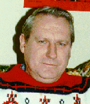

JOHN FRASER - MARY MacDONALD
Genealogy compiled by
John C. McCornack of Yukon, Oklahoma
John Fraser, Sr. was born in December 1764 at Muirton, Scotland. The earliest history of the Fraser family is recorded in the memoirs of John Fraser as dictated to and recorded by his son, Simon Fraser.
According to these records John Fraser was born in Muirton, which is located one mile west from the city of Inverness, Scotland. His father was named John Fraser and his grandfather was named John Fraser. His great, grandfather was named Alexander Fraser. The Fraser family lived at Muirton, Scotland in a full view of the cities of Inverness, Fort George, and Red Castle.
THE BROTHERS AND SISTERS
John Fraser had one brother named Simon who died about 1820. Simon Fraser had one son named John Fraser. John Fraser, the nephew, was a school master in the Highlands of Scotland where he raised a large family.
John Fraser had one sister named Margaret who was deaf and dumb from infancy. Margaret lived with her brother John all her life. She died in 1835 at the age of 81 years. At the time of her death, John was living in York, Livingston County, New York.
In addition to his brother and sister, John Fraser had a number of half brothers and sisters because his mother had been married before her marriage to his father.
THE MARRIAGE TO MARY MacDONALD
John Fraser married Mary MacDonald about 1794. There is a separate piece of paper included with the memoirs which says the date was the 25 Dec 1790. At the time of marriage John was thirty years old and his bride was 26 years old.
Mary MacDonald had a least three brothers, one brother named John MacDonald, was killed with a musket ball passing through his lungs in a battle in Spain, near Saragossa (renamed Zaragoza, which is located in Aragon region of northeastern Spain).
Mary MacDonald's second brother, Dugald MacDonald was reported to been slain in Holland. Her third brother, George MacDonald, went on an expedition to Egypt, fought in the battle of the Nile, survived and sailed on an expedition to Jamaica in the West Indies and was reported to have died in this area.
Mary MacDonald's father, after his wife died, enlisted to serve on a British Man-of-War and traveled to the East Indies and died on a passage to the Cape of Good Hope in Africa.
THE MOVE TO AMERICA
After their oldest daughter died of small pox at the age of 7 in 1801, John and Mary Fraser decided it was time to emigrate to America. John and Mary left their native home on the 3 Aug 1803 and started the long journey to America. In the traveling party were seven person including John's sister, Margaret Fraser and a 7 day old baby named Simon J. Fraser. They sailed from the port of Glasgow in a British ship named "Mercury from Kircardt". The fare to America was 10 Guineas per head except for the baby. A Guinea was a British gold coin worth one pound and one shilling.
A son Thomas Fraser provides another version of the move to America:
"John and Mary Fraser migrated from Inverness, Scotland, on the 'Trapper'. They sailed from Greenock on the 8 Sep 1803 and landed in New York in early 1804."
After a trip of many weeks they arrived in New York. There they traveled by sloop to Albany, New York then by land to Johnstown, where they remained till about the last of February, 1804. From Johnstown, they traveled by sleigh to East Bloomfield where a daughter named Mary died and was buried.
From East Bloomfield they moved to Wheatland, Monroe County and stayed at the home of a John McNaughton. From his home they were able to explore the wilderness area for a farm. John Fraser located a farm, build a shanty, and moved his remaining family in the middle of March. In this area, there were five families from his native Scotland, so they named the town Inverness after their native Scotland town. Later records indicate this area was known as Caledonia, Genesee County, New York.
By the time John and Mary Fraser had settled, they had spend all their money. But with hard work and perseverance they lived to make over 100 acres in cultivation and they also made many improvements to the homestead.
THE LAST YEARS
John Fraser died on the 24 Oct 1847. He was buried in cemetery located about a mile from his farmhouse in the Inverness area of Livingston County, New York. His grave was marked by a slab of marble. John's wife, Mary died on the 24 Aug 1858 and was also buried in the cemetery near Inverness. In a letter dated 26 Mar 1988, Judson P. Mason stated the following:
"We did find the cemetery, near York, Livingston County, and have seen their grave markers. If I deciphered the markers, correctly, Mary Fraser was born 1771 and died 24 July 1858."
CHILDREN OF JOHN AND MARY FRASER
i. Unnamed/unknown son. d. before 1803.
ii. Elizabeth Fraser. b. about 1794; d. 1801.
Elizabeth, the oldest daughter, died of small pox in Scotland in about the year of 1801 at the age of about 7.
iii. Donald Fraser. b. about 1796; d. after 1853.
Donald married Isabelle Fraser on about 1817. Isabelle was a cousin. Donald and Isabelle emigrated to Dumfriece, in Canada West (Ontario) in June 1819. They settled on 200 acres of land on the main road from Hamilton to Galt. In 1853, Donald and Isabelle had a family of five boys and two girls.
iv. John Fraser. b. before 1803; d. 1823.
John Fraser moved to Canada in 1821 and died at Toronto in 1823.
v. Mary Fraser. b. about 1802/1803; d. about 1804/1805.
Mary Fraser died on the trip to Inverness, New York at a town called East Bloomfield.
vi. Simon J. Fraser. b. 25/27 Jul 1803; d. 5 May 1862.
Simon married Catherine Fraser on the 17 Dec 1842 at Rochester, New York. The marriage was performed by Rev. Albert G. Hall. Catherine was the daughter of Donald and Mary Fraser of Bag Roy Allengrange Rossshire, Scotland.
Catherine Fraser emigrated from her native home on the 17 Jul 1833. She was under the protection of Mr. Even McDonald to Canada West where they arrived late in the fall of the year. A letter from Scotland stated her mother and father died in February 1843. Catherine had a brother named Alexander who lived in Aberche, Scotland. She also had a brother named Donald and sister named Margaret that remained at her native home of Bag Roy Allengrange, Rossshire, Scotland.
Simon remained at family's home until the death of his father in 1847, managing the family farm. In the family history, Simon provides the following tribute to his wife.
"There is one thing I wish to mention here, a tribute to the memory of my dear Catherine. She was kind to the old people in administering to their wants at all times as need required. She was faithful, kind, and a dutiful wife and mother till the day of her death.
She was in the hand of Providence, a great help to me in encouraging and sustaining me in the many trails and difficulties we had to encounter during the short time God allowed us to live. These difficulties I will not record here but let them go down to oblivion as things that were not."
Simon wife, Catherine, died on the 30 Sep 1851 at the age of 34. Simon and Catherine lived together for eight years, nine months and 17 days. Catherine was buried at Caledonia on Thursday, 2 Oct 1851. Simon Fraser died of consumption in 1862 at the age 59 years.
Children:
1. Mary Helen Fraser. b. 13 Dec 1843; d. 26 Oct 1868. An obituary provides information about Mary.
"This estimable young lady died at the residence of her uncle, Mr. James Blair, at Mumford, on Friday last, aged 24 years. For nearly a year past she was employed as a teacher in the Protestant Orphan Asylum in this city, but in June was attached with bleeding at the lungs, and had failed gradually since."
2. Simon Knox Fraser. b. 27 Apr 1845; d. 6 Feb 1864. Simon died of typhoid fever at the age of 18 years and 9 months. At the time of his death, he was a member of the Co. L, 4th N.Y. Heavy Arty. stationed in Fort Ethan Allen, Virginia. He was in service for 9 months and was sick for six weeks before his death. Simon is buried in the same cemetery as his grandfather, John Fraser, which is located near York, Livingston County, Illinois.
3. Charlotte Elizabeth Fraser. b. 13 May 1847; d. 4 Apr 1849. Charlotte was buried in Caledonia, New York. She died of one and half days of sickness with the croup. Her mother was buried beside her in the same cemetery.
4. Charles Christi Fraser. b. 27 Nov 1849; d. 17 Feb 22. m1 Caroline Steeves on the 25 Mar 1878. Charles was left an orphan at early age. He headed first to Canada, then to Reno, Nevada. He later settled in Kansas and worked on the McDonald ranch near Thayer in Nesoho County. Dale Fraser, 1300 Rosemont Drive, Colorado Springs, Colorado 80911, is a great, grandson of Charles Fraser.
vii. Alexander Fraser. b. about 1806;
Alexander Fraser married Jane McCall in about 1831. Alexander's father, John Fraser, bought him a 124 acre farm for $500. In 1842, Alexander sold the farm for $1,400. Alexander and Jane's first five children were born in Ontario, Canada. Their sixth child was born in Michigan. Alexander and his family moved to Illinois on the 17 Jul 1844.
Children:
1. Mary Fraser. b. about 1833;
2. Nancy Fraser. b. about 1834;
3. John Fraser. b. about 1837; m1 Margaret Jane Miller. At one time, John lived at Hiawatha, Kansas.
4. Elizabeth Fraser. b. about 1839;
5. Simon Fraser. b. about 1840; d. 28 Aug 1924; m1 Alma Eulalia Green on the 22 Feb 1867. Alma was born on the 22 Dec 1850 at Burlington, Illinois. Simon and Alma moved to Kansas in 1872. Alma died on the 1 Aug 1935.
6. Jane Fraser. b. about 1843;
7. Thomas Alexander Fraser. b. 28 Mar 1845; d. 5Aug1917. m1 Emma Priest on the 2 Jul 1868 at East Burlington (or Geneva), Kane County, Illinois. Civil War pension records indicate Thomas and Emma were divorced in 1872. m2 Grace E. Whitaker on the 9 May 1876 at Fredonia. The marriage was performed by W. Stivers. Grace was born in Jan 1850 in Ohio. She died on the 1 Apr 1878 at Thayer, Kansas. m3 Anna Catherine Campbell on the 25 Dec 1879 at Fredonia. The marriage was performed by Judge Stivers. Anna was born on the 20 Mar 1858 at LePorte, Ontario, Canada. She died on the 21 Aug 1935 at Chanute, Neosho County, Kansas. Thomas was born in Kane County, Illinois. He died on the 5 Aug 1917 at Thayer, Kansas.
7. William Fraser. b. about 1848;
viii. Jannette Fraser. b. about 1808; d. after 1853.
Jannette Fraser married James Blair on the 23 Nov 1837. Jannette and James moved to Mumford, Monroe County, New York where he was employed as a machinist in making threshing machines. By 1853, they had a family of 4 girls and 1 boy named James.
ix. Thomas Alexander Fraser. b. 12 Aug 1812; d. 30 Nov 1882
Thomas Fraser married Anne (Anna) Fraser on the 27 Sep 1838. During October they moved to Kane County, Illinois and purchased 200 acres of land.
Anne Fraser was born on the 8 Apr 1817 in Scotland. She was the daughter of William Fraser and Isabella McLean. The William Fraser family arrived in America in 1835 and settled at Caledonia, New York where the John Fraser and Mary MacDonald family lived. Anne was born in Knockbain, Ivernessshire, Scotland which is same area as the John Fraser Family. Anne Fraser was a member of Kirkhill Parish. Anne Fraser is the sister of Elizabeth Fraser who married William McCornack and William Fraser who married Janet McCornack.
|
Children:
1. Mary Fraser. b. 21 Nov 1839; d. 19 Jun 1860 at 21. Mary did not marry and was employed as a school teacher. Mary is buried in Section 3 of Lot O-8 of the Washington Memorial Cemetery located about 6 miles northwest of Elgin, Illinois.
2. John H. Fraser. b. 27 Dec 1841; d. 9 May 1917 at 76. John did not marry. He served in Company I of the 127th Illinois Volunteer Infantry in the Civil War. He was employed as a farmer.
3. William H. Fraser. b. 24 Nov 1843; d. 11 Dec 1863. William enlisted on the 22 Aug 1862 and served in the Company I, 127th Illinois Volunteer Infantry as a Corporal. He was in the prison at Andersonville, Sumpter County, Georgia. He died from a war inflicted illness and was buried in Section 4 of Lot O-8 of the Washington Memorial Cemetery located northwest of Elgin, Illinois.
4. Isabella Fraser. b. 24 Feb 1846; d. 26 Jan 1847. Isabella is buried in Section 2 of Lot O-8 of the Washington Memorial Cemetery located northwest of Elgin, Illinois. She was the first person to be buried in this cemetery.
5. Daniel Fraser. b. 9 Dec 1847; d. 23 Feb 1878 at 31. Daniel did not marry. He was a farmer. He is buried in Section 1 of Lot O-8 of the Washington Memorial Cemetery.
6. Anne Elizabeth Fraser. b. 1 Apr 1850; d. 27 Apr 1923 m1 Judson Philetus Mason on the 22 Mar 1872 at her father's home. Judson was born on the 31 Mar 1850 on an adjoining farm located in Dundee Township in Kane County, Illinois. Anne (Anna) was born in the Rutland Township.
Judson was the son of John Thomas Mason and Wealthy Diantha Kelsey. John Fraser was born on the 18 Feb 1816 at Savoy, Berkshire County, Maryland. John died on the 14 Jul 1876 at the family farm in Dundee Township, Kane County, Illinois. Wealthy was born on the 22 May 1826 at Sheldon, New York. She died on the 6 Nov 1866. Both John and Wealthy were buried in the Dundee Township Cemetery .
Judson's parents John Mason and Wealthy Kelsey were married on the 15 Nov 1845 at Cuba, Illinois. After the death of Wealthy, John married Malinda Bradley in 1867.
Judson operated a cheese factory at Cameron, Missouri. In 1876, he returned to his father's farm to assume management of the farm and the Walnut Grove Creamery located on the same property. He was an outstanding dairy farmer, farm leader, businessman, and banker.
Judson increased his land holdings in the community, owning farms operated by his sons, John, Richard, Raymond, and Mark. In addition he had larger land holdings in Montana. He was president, Chicago Milk Shippers Association: first president of the Kane County Farm Bureau: president of the Illinois State Dairymen's Association: president of the Illinois Farmers Institute: treasurer, Elgin Board of Trade: director of the Home National Bank of Elgin.
Judson died on the 12 Mar 1927 on his farm in Kane County, Illinois. Anne died in the Augustana Hospital in Chicago, Illinois. Both are buried in the Dundee Township Cemetery in West Dundee, Kane County, Illinois.
7. Jeanette Fraser. b. 4 Jul 1852; d. 29 Mar 1920. m1 John Leland Mason on the 3 Feb 1879 at Genoa, Wisconsin. John was born on the 30 Jun 1847 in the Dundee Township in Kane County, Illinois. John died on the 3 Apr 1928. Jeanette (Jeannette) was born in the Rutland Township and died west of Elgin, Illinois.
John Mason was the son of David Mason and Eliza Norton Colson. David Mason was born on the 28 Jun 1818 in Savoy, Berkshire County, Maryland. He died on the 4 Jun 1903 at Elgin, Illinois. Eliza was born on the 8 Apr 1815 at Windsor, Berkshire County, Maryland and died at the family farm in Dundee Township. Both David and Eliza are buried in the Dundee Township Cemetery in West Dundee, Illinois.
John Mason parents, David Mason and Eliza Colson were married on the 2 Sep 1838 in Lebanon, New York by Ira Hand, Justice of the Peace.
John Mason was engaged in dairy farming and was noted as a sheep raiser. He served many years as the Dundee Township Road Commissioner and toured the road network in an early model Case automobile. All nine of John's and Jeanette's children were born on the family farm in Dundee Township located in Kane County, Illinois.
8. Ellen Isabel Fraser. b. 4 Oct 1854; d. 7 Feb 1942. m1 Neil MacLean Fraser on the 11 Mar 1884. Neil was a cousin. Ellen and Neil lived in Iowa. Neil was born on the 14 Mar 1850 and died on the 22 Oct 1894. He was buried in Shannon City, Iowa. Neil is buried in Section 3 of Lot I-1 of the Washington Memorial Cemetery.
9. Katherine Jane Fraser. b. 13 May 1858; d. 19 Jul 1930.
10. Thomas Alexander Fraser. b. 11 Jan 1861; d. 3 Sep 1904. Thomas did not marry. He attended the Elgin Academy and was employed as a farmer.
x. Mary Fraser. b. after 1810; d. after 1853.
Mary Fraser married Amos Smith, a blacksmith by trade, and moved to Wisconsin in August 1841.
For additional Fraser Genealogy ....... http://thefrasers.com
Contact me at.....JMcCornack@aol.com